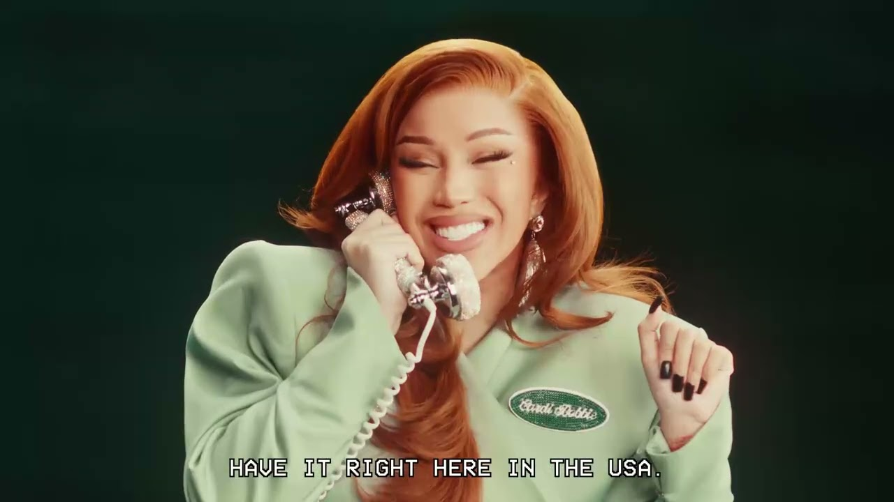
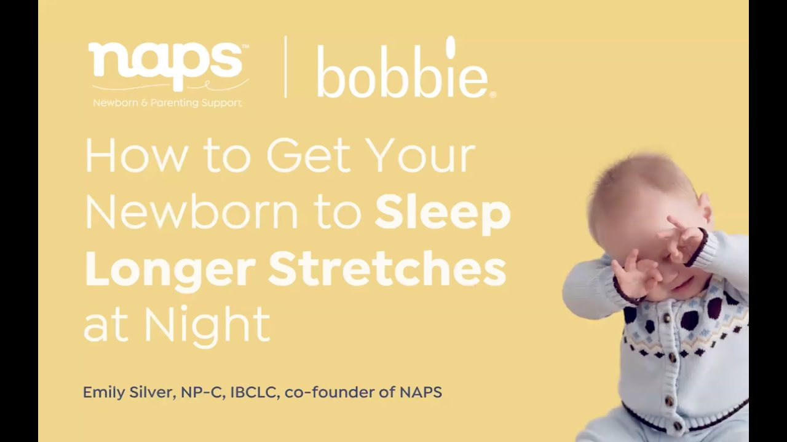

Future State
Where the Channel Could Go
The channel splits into two visible layers: the existing brand content and a growing AEO-optimized search library. Playlists reorganized around query intent. YouTube search picks up the new content. AI Overview citations begin appearing.

B
Bobbie Infant Formula
Home
Videos
Shorts
Podcasts
Playlists
Playlists — Reorganized by Parent Need
Existing playlists kept, new AEO-focused playlists added to create clear query clusters alongside brand content.

6
videos
videos
Formula Safety & Recalls

5
videos
videos
How to Choose Formula

5
videos
videos
New Parent Feeding Guides

7
videos
videos
The Scoop by Bobbie

36
eps
eps
Milk Drunk Podcast

3
videos
videos
Cardi B: The B Is For Bobbie
Gaining Traction
AEO-optimized videos ranking in YouTube search. AI Overview citations appearing for key parent queries.
Re-cut · AEO cited

AEO Cited ✓
8:12
Is Your Baby Formula Safe? What Every Parent Should Know
Re-cut · Ranking

Search Ranking ↑
10:34
Which Formula Is Closest to Breast Milk? (Honest Comparison)
New

9:15
Bobbie vs Enfamil: An Honest Side-by-Side Comparison
Re-cut

AEO Optimized
7:02
Supplementing Breastfeeding with Formula (Step-by-Step)
Existing Evergreen (Still Performing)
Existing

4:12
Ashley Iaconetti's Journey Through Love After Baby | The Scoop
Existing

3:03
Trusting Yourself as a New Parent | Tan France
Existing

46:03
Combo Feeding 101: Breast, Bottle, Both | Milk Drunk
Existing

2:59
Embracing my Postpartum Body | Andreea Gaul
What success looks like: The new AEO-optimized layer is working — YouTube search impressions are trending up and the first 2–3 priority queries show Bobbie content in AI Overviews. The existing content (Scoop, Milk Drunk, Cardi B) continues to provide channel authority. Key decision point: if search impressions grow but AI citations don't, revisit metadata alignment and medical reviewer trust signals.